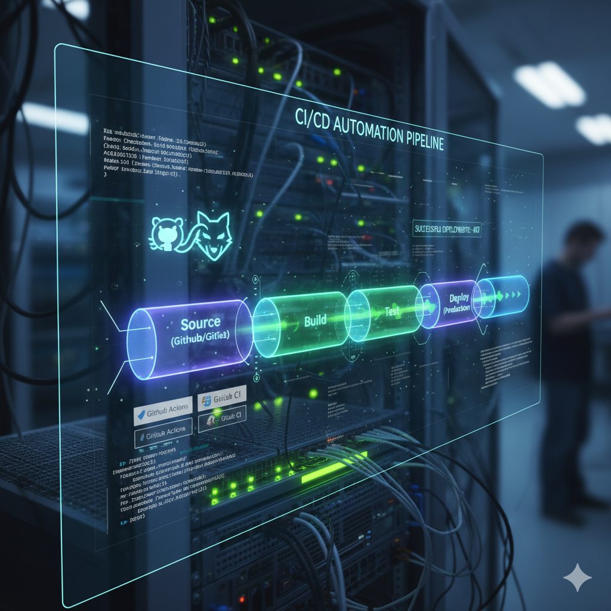
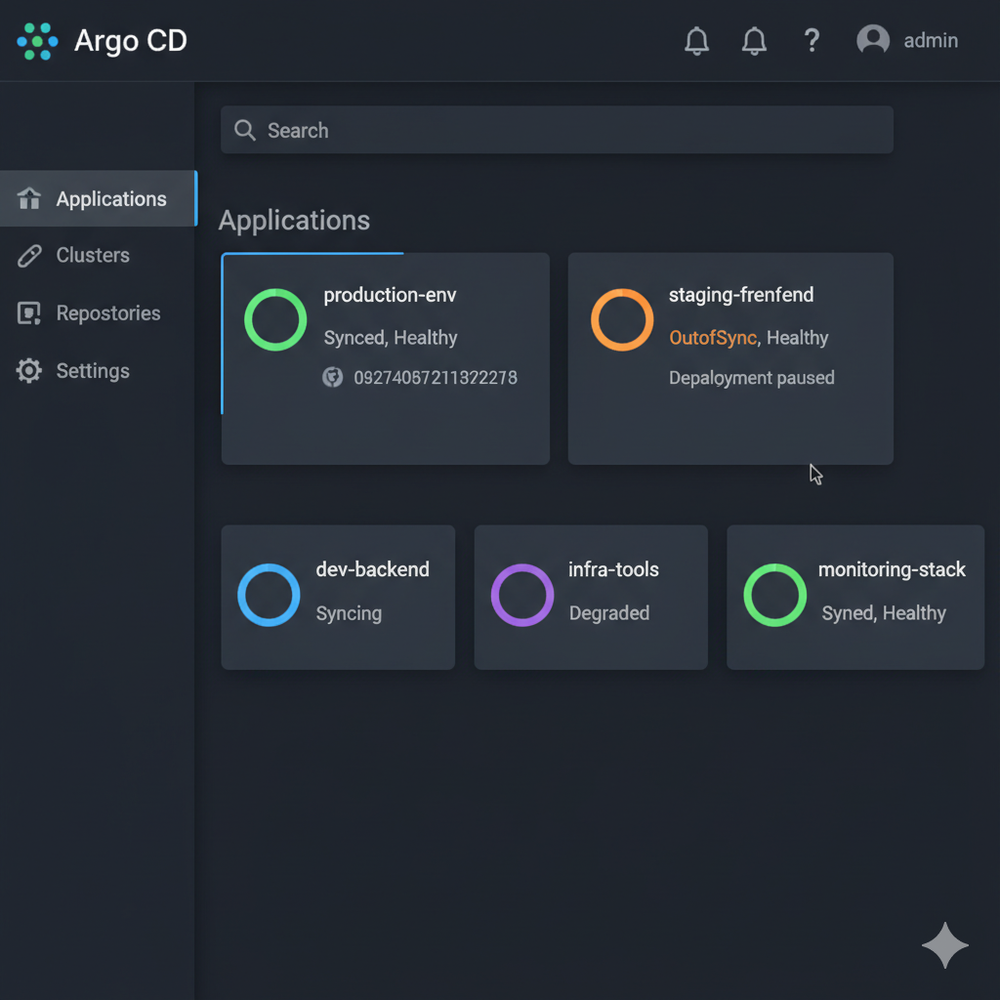

Muhammad Waqas
DevOps Engineer
Professional Summary
DevOps Engineer with 2+ years of production experience across Azure, AWS, and GCP on Linux-based infrastructure. Migrated a 12-database multi-tenant platform to Google Cloud with zero downtime and 100% API backwards compatibility, built 15+ production CI/CD pipelines with enforced security gates, manage infrastructure as code with Terraform and Ansible, and run GitOps on production Kubernetes with Argo CD. I work from verified data, not assumptions: every change is validated against logs and metrics before and after execution.
Featured DevOps Projects

Zero-Downtime Cloud Migration to GCP
Migrated a 12-database, multi-tenant platform (11 clubs + central dashboard) from Backendless BaaS to GCP with zero downtime: Cloud SQL/PostgreSQL, Cloud Run API with 100% endpoint parity, MD5-to-bcrypt auth upgrade, and sub-100ms response times.
Read the full write-up on Medium →
CI/CD Pipeline Automation
Built 15+ production CI/CD pipelines using GitHub Actions, GitLab CI/CD, and Jenkins with integrated security gates (Trivy, Anchore, SonarQube), reducing deployment time from hours to 5–10 minutes via caching and parallelized jobs.

Multi-Cloud IaC Provisioning
Provisioned AWS and Azure infrastructure with reusable Terraform modules and Ansible playbooks for high-availability, fault-tolerant systems; reduced environment provisioning from days to under 30 minutes.

GitOps Automation with Argo CD
Implemented GitOps workflows for production Kubernetes (K3s) clusters using Argo CD and Argo Workflows: automated sync, drift detection, and rollback, with Git as the single source of truth.

High-Availability Docker Swarm ERP
Architected a 5-node Docker Swarm cluster on AWS EC2 running Odoo ERP and PostgreSQL; 30% database performance improvement via connection pooling and query optimization, with health checks and rolling updates.

Kubernetes Cluster Optimization
Optimized production Kubernetes clusters with resource limits, namespaces, and health probes; managed workloads via Deployments, ReplicaSets, and Services; configured Ingress controllers and Helm charts for scalable routing.
Technical Skills
Containers, Orchestration & IaC
- Kubernetes, K3s, AKS
- Docker, Docker Compose, Docker Swarm
- Terraform, Ansible
- Helm, Argo CD, GitOps
Cloud Platforms
- AWS (EC2, S3, Lambda, IAM, VPC)
- Azure (AKS, Monitor, Key Vault, Functions)
- GCP (Cloud Run, Cloud SQL, Cloud Storage)
CI/CD, DevSecOps & Monitoring
- GitHub Actions, GitLab CI/CD, Jenkins
- Trivy, Anchore, SonarQube, Harbor
- Prometheus, Grafana, Azure Monitor
- Git, GitHub, GitLab
Languages & OS
- Bash, Python, YAML
- PostgreSQL, MySQL, MongoDB, Redis
- Linux (Ubuntu, AlmaLinux, CentOS)
Certifications
Microsoft Certified: Azure Administrator Associate (AZ-104) Jan 2025 – Feb 2026